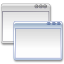

Documentation
Presentation
How it works
Main features
Quick start tutorial
Installation and configuration
Documentation for latest stable version

All versions:
Version 1.2
(development version)
Version 1.1
Version 1.0
Version 0.9.4
(old wiki)
Development
API documentation
Changelog
Roadmap
SVN access
CPAN test reports:
LemonLDAP::NG Common
LemonLDAP::NG Handler
LemonLDAP::NG Portal
LemonLDAP::NG Manager
Translators
See
translations
.
Other
Conferences
References
Press